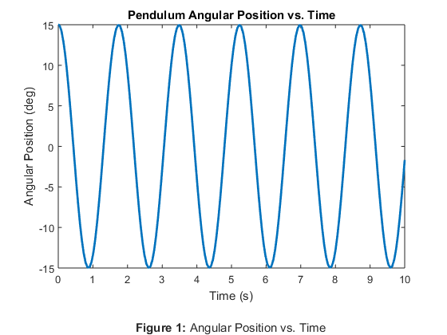
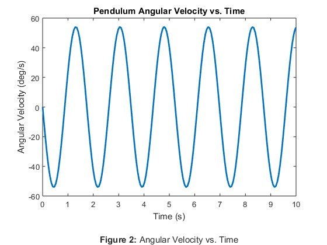
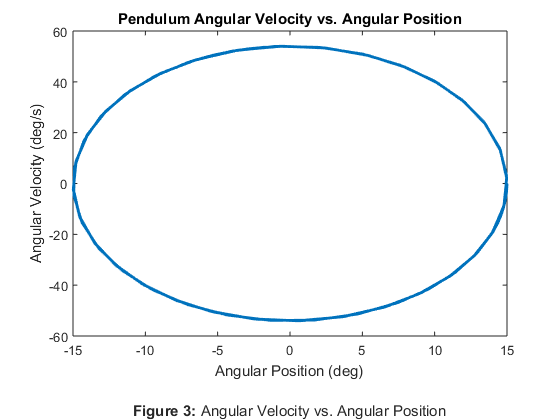
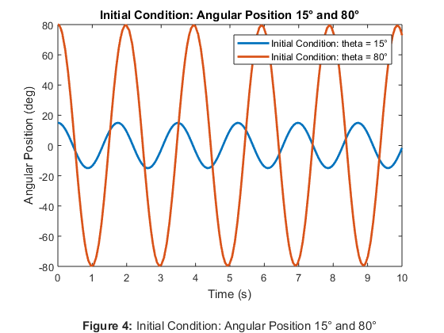
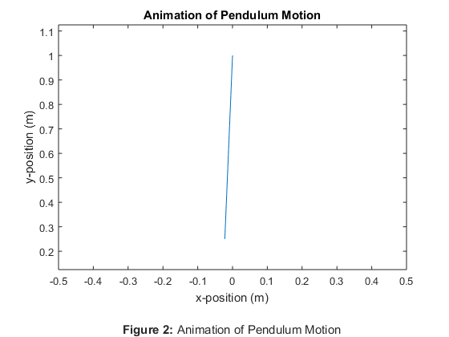

Rahul_Goyal_main Usage and Description
ME 326 Winter 2018 - Laboratory Assignment #2
Author: RAHUL GOYAL
California Polytechnic State University, San Luis Obispo, CA
Date Created: January 16, 2018
Date Modified: January 23, 2018
Description: This script compares the use of ode45 versus Euler's method to analyze the motion of a pendulum (assuming a massless rod and a point mass bob), a nonlinear differential equation. Additionally, because the hand calculations used to determine the differential equation for this script do not use the small angle approximation [that is, sin(theta) = theta], the script allows the study of the pendulum's motion at larger angles and determines which effects are ignored by the small angle approximation (and therefore are also less apparent when the pendulum swings at small angles).
Required Files:
- EulerSolver.m - This file contains a function that utilizes Euler's method to solve an ODE. It takes a function handle, final time, initial condition(s), and the desired time step as parameters, respectively. It outputs an array containing a time array and x array as [t, x_array].
Called Functions
Still To Do:
- Done!
Contents
- Problem Statement
- Reset
- Given Values, Initial Conditions
- Pendulum Differential Equation Setup
- Simulating the Pendulum Using ode45 and EulerSolver
- Plotting Data Setup
- Pendulum Angular Position vs. Time
- Pendulum Angular Velocity vs. Time
- Pendulum Angular Velocity vs. Angular Position
- Initial Condition: Angular Position 15° and 80°
- Animation of Pendulum Motion
Problem Statement
The pendulum consists of a bob attached to a light rod which pivots freely about a fixed point. The bob is 0.75 m from the pivot, has a mass of 0.5 kg, and can be modeled as a point mass. Unless otherwise specified, assume the pendulum is displaced 15 degrees from the vertical and released from rest.
Reset
The following was used while debugging.
% clear all; % clc;
Given Values, Initial Conditions
The following defines variables with the values given by the problem statement. (The value of the gravitational constant is assumed).
% Given Values L = 0.75; % Rod length (m) m = 0.5; % Mass (kg) g = 9.81; % Gravitational constant (m/s^2) % Initial conditions (angular position, angular velocity) ICs = [15, 0]; % x1, x2 (deg, deg/s) % Time initial and time final t_0 = 0; % Initial time (s) t_f = 10; % Final time (s) % Time step for Euler's Method t_step = 0.001; % Time step (s)
Pendulum Differential Equation Setup
The following sets up an anonymous function requiring only a time array and x array input for the differential equation (which also requires an input for g and L). The script provides the values for g annd L, and so this anonymous function can be passed to ode45 and EulerSolver successfully.
The equation is multiplied by 180/pi to convert from rad/s^2 to deg/s^2. See the attached sheet for hand calculations.
PendulumODE = @(t, x) [x(2);
-g*sind(x(1))/L * 180/pi];
Simulating the Pendulum Using ode45 and EulerSolver
The following solves the differential equation using ode45, a built-in MATLAB™ differential equation solver, and Euler's method. The tic and toc functions assist in assessing the performance of ode45 versus EulerSolver by measuring the time it takes to run each respective function.
The time elapsed statements for ode45 and EulerSolver below indicate that ode45 is a more efficient ODE solver than Euler's method (for a computer), but not necessarily enough for it to make a difference for an application this small; for heavier computations it is likely that the efficiency of ode45 is more significant. For example, EulerSolver requires a time step of 1 millisecond to prevent the results of this differential equation from diverging over a 10 second interval; however for a differential equation that would require an even smaller time step, it is likely that the computational time of EulerSolver would increase more significantly than it would for ode45.
Additionally, the ode45 function consistently outputs results that maintain a constant amplitude over any interval of time. In contrast, EulerSolver consistently outputs results that diverged eventually. Over a time interval, a small enough time step helped produce more reasonable results, yet increasing the time interval with the same time step showed (graphically) that the results still diverged. As an example, if an application required simulating this pendulum for ten minutes, then the computational time difference between ode45 and EulerSolver would become noticeably apparent since the EulerSolver would require much smaller time steps and simulate a ten minute swing -- resulting in many more calculations.
Note: The elapsed times are different when publishing this script. Generally, ode45 (~0.003 s) is approximately 6x faster than EulerSolver (~0.018 s).
Simulating the Pendulum Using ode45
tic; % Start timer [t_ode45, x_ode45] = ode45(PendulumODE, [t_0, t_f], ICs); toc; % Stop timer % Debugging statement % plot(t_euler, x_euler); % Plots x1 and x2 vs. time (ode45)
Elapsed time is 0.009835 seconds.
Simulating the Pendulum Using EulerSolver
tic; [t_euler, x_euler] = EulerSolver(PendulumODE, t_f, ICs, t_step); toc; % Debugging statement % plot(t_euler, x_euler); % Plots x1 and x2 vs. time (Euler)
Elapsed time is 0.025603 seconds.
Plotting Data Setup
The following sets up easy access to data for plotting.
time = t_ode45; % Time (s) (x-axis) theta = x_ode45(:, 1); % Angular position (deg) omega = x_ode45(:, 2); % Angular velocity (deg/s)
Pendulum Angular Position vs. Time
The following plots angular position as a function of time. The result is a sinusoid (specifically a cosine function), as expected from the motion of a pendulum. Because the pendulum is released at 15 degrees (as defined by the diagram), the graph begins at 15 degrees at time = 0 and proceeds to oscillate between 15 degrees and -15 degrees.
plot(time, theta, 'LineWidth', 2); title('Pendulum Angular Position vs. Time'); xlabel({'Time (s)' '' % Figure label '\bfFigure 1: \rmAngular Position vs. Time'}); ylabel('Angular Position (deg)');
Pendulum Angular Velocity vs. Time
The following plots angular velocity as a function time. The result is a sinusoid, (specifically a negative sine function) as expected from the motion of a pendulum. The cosine function accurately depicts the derivative of the angular position vs. time plot, as it should: angular velocity is the derivative of angular position and negative sine is the derivative of cosine.
plot(time, omega, 'LineWidth', 2); title('Pendulum Angular Velocity vs. Time'); xlabel({'Time (s)' '' % Figure label '\bfFigure 2: \rmAngular Velocity vs. Time'}); ylabel('Angular Velocity (deg/s)');
Pendulum Angular Velocity vs. Angular Position
The following plots angular velocity as a function of position.
Above, it was graphically determined and logically confirmed that the angular position of the pendulum is described by a cosine function and the angular velocity by a negative sine function. In general, plotting cos(theta) vs. sin(theta) produces a circle; however, in this case the "theta" differs. Thus, the ellipse produced by this plot is reasonable.
Analytically, this plot illustrates that, at any given position, the pendulum has two equal but opposite possible angular velocities. The exception to this is at either peak of the pendulum's swing, at which the angular velocity is 0 deg/s (of which an "opposite" angular velocity doesn't even exist). Both takeaways are reasonable since the pendulum swings back and forth (that is, in two directions) with the exception being at its peaks, at which, instantaneously, the pendulum stands still.
plot(theta, omega, 'LineWidth', 2); title('Pendulum Angular Velocity vs. Angular Position'); xlabel({'Angular Position (deg)' '' % Figure label '\bfFigure 3: \rmAngular Velocity vs. Angular Position'}); ylabel('Angular Velocity (deg/s)');
Initial Condition: Angular Position 15° and 80°
The following simulates the pendulum had it been released at 80 degrees and compares it to the simulation from before in which the pendulum was released at 15 degrees.
Of course, the amplitude of the pendulum released from 80 degrees has a larger amplitude than the pendulum released from 15 degrees. However, more interestingly, the effect of larger swings which cannot be characterized by the small angle approximation is apparent here. Whereas the pendulum characterized by the small angle approximation does not depend on the initial condition of theta at which the pendulum was released, the plot suggests that the period of the pendulum's motion is, in fact, affected by the intial condition of theta at which the pendulum was released. Specifically, it seems that a smaller theta corresponds to a smaller period, as the pendulum released from 15 degrees completed about 5.5 oscillations over a 10 second interval, but the pendulum released from 80 degrees completed about 5 oscillations over the same time interval.
Calculate Data for Initial Angular Position = 80°
% Initial conditions (angular position, angular velocity) ICs = [80, 0]; % x1, x2 (deg, deg/s) % Simulating the pendulum using ode45 [t_ode45_80, x_ode45_80] = ode45(PendulumODE, [t_0, t_f], ICs); % Easy access to data for plotting time_80 = t_ode45_80; % Time (s) (x-axis) theta_80 = x_ode45_80(:, 1); % Angular position (deg) omega_80 = x_ode45_80(:, 2); % Angular velocity (deg/s)
% Plot plot(time, theta, time_80, theta_80, 'LineWidth', 2); title('Initial Condition: Angular Position 15° and 80°'); xlabel({'Time (s)' '' % Figure label '\bfFigure 4: \rmInitial Condition: Angular Position 15° and 80°'}); ylabel('Angular Position (deg)'); legend('Initial Condition: theta = 15°', 'Initial Condition: theta = 80°');
Animation of Pendulum Motion
The following animates the pendulum's motion based on the data from the original simulation. The pivot location was chosen arbitrarily and acts as an origin for the animation.
% Cartesian coordinates of the pivot (m) p = [0, 1]; for t = 1:length(time) % Cartesian coordinates of the bob (m) x = p(1) + L*sind(theta(t)); y = p(2) - L*cosd(theta(t)); % Plot % Plots the range of x-axis, y-axis values from the pivot to the bob plot([p(1), x], [p(2), y]); % Keeps the frame consistent axis([-0.5, 0.5, 0.125, 1.125]); title('Animation of Pendulum Motion') xlabel('x-position (m)'); xlabel({'x-position (m)' '' % Figure label '\bfFigure 2: \rmAnimation of Pendulum Motion'}); ylabel('y-position (m)'); pause(0.1); % Pauses for humans end